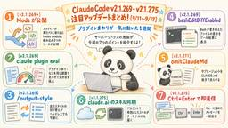

サーバーワークスエンジニアブログ
https://blog.serverworks.co.jp/
AWSトップエンジニア数「AI」「セキュリティ」部門で国内No.1のサーバーワークスのエンジニアが、AWSに関する技術情報をお届けします。
フィード

Claude Code更新 AGENTS.md対応・クラウドセッション正式提供【9/18〜24】
サーバーワークスエンジニアブログ
はじめに サーバーワークスの池田です。 今週（9/18〜9/24）のClaude Codeは、v2.1.276からv2.1.282まで6バージョンが公開されました（v2.1.279は欠番）。 大きな話題は2つです。1つはv2.1.277で入ったAGENTS.md対応で、CLAUDE.mdがないリポジトリではAGENTS.mdをプロジェクト指示として読むようになりました。もう1つはクラウドセッションの正式提供で、9月23日にresearch preview（研究プレビュー）を卒業しています。 ほかにも、auto modeの安全チェックがサーバー側で行われるようになり、Claude Opus 5.…
5時間前

AWS のオープンソースソリューション "AWS Service End-of-Life Data" のご紹介
サーバーワークスエンジニアブログ
AWS 社員など有志の手によって公開・維持管理されるオープンソースソリューションで EoL 管理をちょっと楽にできそうな "AWS Service End-of-Life Data" のリリースがありましたのでその紹介記事となります。
1日前

Claude Opus 5.5 リリース！Fable 5.1級の性能でコスト40%減
サーバーワークスエンジニアブログ
はじめに サーバーワークスの池田です。 2026年9月22日、Anthropic が Claude Opus 5.5 をリリースしました。新しい Claude 5.5 ファミリーの最初のモデルで、Opus 5 の後継にあたります。 多くの作業で Claude Fable 5.1 と同等の性能を出しながら、実行コストは Opus 5 より約40%低くなっています。Claude Code では同日公開の v2.1.280 から使え、Opus の既定モデルも Opus 5.5 に切り替わりました。 本記事では、公式発表と公式ドキュメントをもとに、Opus 5 から何が変わったのか、Claude Co…
1日前

Context Ontology Accelerator (COA) とは？具体例で学ぶオントロジーの仕組みと検証レポート
サーバーワークスエンジニアブログ
サーバーワークスの村上です。 AWSがOSSで公開しているContext Ontology Accelerator（以下、COA）について検証した内容を紹介します。 一般的な理解・概念を知りたい方は以下のブログをご参照ください。 blog.serverworks.co.jp オントロジーを具体例で理解する 1つ目：業績テーブル 2つ目：会計期間マスターテーブル 生成されたオントロジー クラス（owl:Class）＝「概念」を宣言する Datatype Property（owl:DatatypeProperty）＝クラスが持つ「属性」 Object Property（owl:ObjectProp…
2日前
AI-DLC Unicorn Gym 参加レポート 〜AI-DLC Workflow V2で体験する新世代のAI駆動開発〜
サーバーワークスエンジニアブログ
はじめに AI-DLC Unicorn Gym の流れ AI-DLC Workflow V2 について ワークフローの基本サイクル V1からV2への進化：2つのループ 用語集 深度（Depth）などの設定 実践1：ECサイト構築 実践2：プロダクト開発 開発したプロダクトの概要 Inception フェーズでの体験 Construction フェーズでの体験 感想と考察 1. AIが頼れる「プロジェクトメンバー」になる 2. 推論待ち時間と思考の切り替え 3. コスト面（トークン使用量） 4. V1からV2へのパワーアップ実感 5. 求められる「即時判断力」と脳への負荷 次にAI-DLCを行う…
3日前
Amazon Connect CustomerのAgentic CX designerを使ってAIボイスボットを構築してみた
サーバーワークスエンジニアブログ
こんにちは、サーバーワークス橋本です。季節もようやく落ち着いてきて過ごしやすい時期になりました。 家の猫も寝る場所をちょうどよい場所に移動するようになりました。 今はキャットタワーの上から仕事している私を監視している毎日です。 さて、Amazon Connect Customerの新しい機能 Agentic CX designer を使って、会話型AIボイスボットを構築してみました。 AWS公式ページ 実際に触ってみたところ、これまでオペレーターが対応していた一次受け業務などを、「簡単かつスピーディに会話型AIへ置き換えられるのでは？」 と非常に期待が高まる内容でした。 今回は、具体的な構築の…
3日前

Claude Code更新 Mods・Slides【9/11〜17】
サーバーワークスエンジニアブログ
はじめに サーバーワークスの池田です。 今週（9/11〜9/17）のClaude Codeは、v2.1.269からv2.1.275まで7バージョンが公開されました。 プラグインまわりの動きが集中した週です。プラグインの振る舞いをTypeScriptの関数で書く「Mods」のソースが公開され、プラグインの効き目を採点するclaude plugin evalが追加されました。9月16日と17日には、Claude本体側でClaude SlidesとProjectsも発表されています。 この記事で分かること Modsとは何か、従来のhooksと何が違うのか 公開された3つのMod（sec-defaul…
7日前

Claude CodeやCursorの"働きぶり"を可視化する ー New Relic Preflightのローカル導入ガイド
サーバーワークスエンジニアブログ
Claude CodeやCursorの利用状況を無料で見える化するNew Relic Preflightの紹介記事です。インストールからセットアップ、ローカルダッシュボードの見方までをローカルモード限定で解説します。
8日前
AI で自分専用の教科書を作って、「学び」と「実務の判断」を両立しよう
サーバーワークスエンジニアブログ
「自分専用の教科書」を作って、実務で解決すべき課題に結びつけながら、意志決定の材料整理と関連要素技術のキャッチアップを同時にやっちゃいましょう！という記事です。
9日前
仕様を伝えたらあとはAI任せ ー エージェントを役割分担させて設計からレビューまで自動化した話
サーバーワークスエンジニアブログ
AI駆動開発でドキュメントとテストが乖離する問題を、エージェントの役割分担で解決した実例。Claude Code・GitHub Copilot活用のワークフロー設計を解説します。
9日前
CloudTrail のイベントをマネジメントコンソールの Amazon Q に自然言語で聞けるようになりました
サーバーワークスエンジニアブログ
今日誕生日の人、おめでとうございます🎉 エデュケーショナルサービス課の森純子です。 CloudTrail のログから「証跡はちゃんと設定できているか」「誰がこのロールを使ったか」を調べようとすると、これまでは Amazon Athena や CloudWatch Logs Insights でクエリを書いたりしていました。どちらのツールを使うべきかを判断し、クエリ言語を覚え、ログの構造を理解して、ようやく答えにたどり着く。セキュリティ調査や監査のたびにこの手間がかかるのは、地味に負担です。 2026年9月15日のアップデートで、CloudTrail がマネジメントコンソールの Amazon Q…
9日前
STS のセッショントークンが 4,096 バイト上限に一本化されたので CLI と CloudWatch で測ってみた
サーバーワークスエンジニアブログ
今月誕生日の人、おめでとうございます🎉 エデュケーショナルサービス課の森純子です。 セッションタグや複数のセッションポリシーを使う構成で、AssumeRole がある日突然 PackedPolicyTooLarge エラーで失敗した経験はないでしょうか。 これまで AWS STS は「セッショントークンのサイズ」と「渡すポリシー・タグのサイズ（packed policy size）」に別々の制限を課していて、どちらに引っかかっているのか分かりづらいところがありました。しかも、トークンが上限にどれだけ近づいているかを数値で知る手段がなかったため、検証環境で意図的に上限付近のトークンを作って確かめ…
9日前
「なぜパスワードなしで安全に繋がるの？」公開鍵と秘密鍵の仕組みを鍵生成から理解するSSH入門
サーバーワークスエンジニアブログ
はじめに SSHとは何か？ SSH（Secure Shell）の基本 なぜSSHが必要なのか？ SSHが保証する3つの安全機能 公開鍵と秘密鍵の役割 秘密鍵を送信しない？公開鍵認証が安全な理由 EC2接続の裏側で起きていたこと おわりに はじめに こんにちは、最近VIVANTにハマっている椎名です。今回は、「SSHの暗号化や鍵ペア認証の仕組み」について書きます。 以前書いた記事『【前編】VS CodeのRemote-SSHでEC2に接続してみよう』では、AWSで取得した .pemファイルを使ってVS CodeからEC2へ接続する実践的な手順をご紹介しました。 前回は接続体験を優先したため「.p…
10日前
AMI で利用できるインスタンスタイプを指定できるようになりました
サーバーワークスエンジニアブログ
Amazon EC2 で AMI 上で利用できるインスタンスタイプを指定できるようになりました 「このAMI、うっかり関係ないインスタンスタイプで起動されて起動失敗した」みたいな事故、地味に起きがちです。 今回、AMI側に利用できるインスタンスタイプを定義できるアップデートが入ったので、実際に触って挙動を確認してみました。 Amazon EC2 が AMI と互換性のあるインスタンスタイプの指定をサポート 対象としている読者 独自AMIを配布・運用していて、意図しないインスタンスタイプで起動されるのを防ぎたい方 ARMやGPUなど特定アーキテクチャ専用のAMIを、うっかり非対応のインスタンスタ…
10日前
Amazon Bedrock の API キーとは何者なのか？ IAM の観点から読み解いてみる
サーバーワークスエンジニアブログ
Amazon Bedrock の API キーの正体は IAM のサービス固有認証情報です。short-term と long-term の違い、既定ポリシーが許す範囲、そしてアクセスキー流出時に攻撃者が長期キーを発行する連鎖とその防ぎ方までを IAM の観点から整理しました。
10日前
【福岡開催レポート】Claude Desktop × Amazon Bedrock で挑むAIエージェント活用セミナー
サーバーワークスエンジニアブログ
こんにちは。AI推進課の菅谷です。 2026年8月20日、福岡にて「Claude on Amazon Bedrock ハンズオンイベント」を開催いたしました。当日は7社13名の皆様にご参加いただきました。 現場から「Claudeを使ってみたい」という声が届く一方で、いざ検討を始めると、 Claudeは、現場の生産性を本当に向上させてくれるのか？ 自社でClaudeを安全に利用するにあたり、どのポイントに注目すればいいのか？ Anthropicとの直接契約とAWS（Amazon Bedrock）経由、どちらが自社にとってベターなのか？ といった点で立ち止まってしまう企業様も多いのではないでしょう…
11日前
Amazon SES Mail Manager の宛先ドメインごとでSMTPリレーの転送先を振り分ける
サーバーワークスエンジニアブログ
Amazon SES Mail Managerを利用して、特定ドメイン宛のメールを異なるサーバーに振り分ける構成を紹介します。SMTPルーティングの具体的手順と注意点を徹底解説。
11日前
Agentic AI Lens でAIエージェント運用について考えよう（１）～セキュリティの柱とOWASP～
サーバーワークスエンジニアブログ
AI推進課の笹木です。 みなさんはAIエージェントを使っていますか？使っているならどんなことをさせていますか？ なかにはもうAIエージェントに買い物をさせている、なんてこともあるかもしれません。 でも、それって安全でしょうか？確実に欲しいものだけを買ってくれるのでしょうか？あとはひょっとしてAIに買い物をさせるために買うもの以上のコストをかけてる、なんてことはないですか？ 当然ですがエージェントに色んなことを任せられるようになればなるほど、その運用の重要性は増していきます。 AWSでもこの1年でAIエージェント向けのサービスが数多く発表され、多くの企業様がAIエージェント運用特有の難しさに直面…
11日前
AWS DevOps Agent の双方向 Slack 通信で Slack からインシデント調査を依頼してみた
サーバーワークスエンジニアブログ
AWS DevOps Agent が Slack との双方向通信を実現！プライベートチャネルでアラート状況を手軽に確認し、効率的な調査をサポートします。
11日前
macOS 27 Golden GateのUSBインストールメディアの作り方
サーバーワークスエンジニアブログ
コーポレートエンジニアリング部の宮澤です。2026年9月15日(日本時間)にmacOS 27 Golden Gateがリリースされました。 去年のTahoeがリリースされたときにも記載してますが、弊社では、macOSがリリースされたタイミングで、念の為、USBインストールメディアを作成しています。今回も、新しいOSがリリースされたのでメディア作成の手順を紹介します。 blog.serverworks.co.jp macOS 27 Golden Gateをダウンロード 以下のコマンドを実施して、ダウンロードします。 sudo softwareupdate --fetch-full-install…
11日前
Skillの成果物に「作者名」を！ フロントマターに生成元を残すという運用
サーバーワークスエンジニアブログ
はじめに Claude Code や Kiro などのAIエージェントを使っていると、決まった作業をSkillとしてワークフロー化することがあります。私も AWS の作業手順書を生成する procedure-writer というSkillを育てています。 あるとき、生成した手順書を現場で使い、フィードバックをSkillへ反映しようとして手が止まりました。その手順書がどのSkillで生成されたものか、ファイルからは分からなかったからです。成果物のMarkdownファイルだけがローカルに残っていて、どのSkillの流儀で生成されたかを示す情報が、ファイル側に何もありません。改善フィードバックをSk…
13日前
オントロジーって何？というところから、AWS Context と Databricks Genie Ontology を比べてみた
サーバーワークスエンジニアブログ
こんにちは。アプリケーションサービス本部 ディベロップメントサービス4課の大橋です。 最近、開発で AI にコードを書いてもらっています。ただ、正しく実装してもらうには、そのプロダクトの仕様や関連するコードをきちんと渡さなければなりません。そこで、ドキュメントやコードを Amazon Neptune という AWS のグラフデータベースに入れ、AI と外部データをつなぐ MCP を使って検索できるようにしています。ある機能について質問すると、直接関係する文書だけでなく、そこにつながる別の仕様やコードまで拾ってくれるため、必要な情報の抜け漏れがかなり減りました。 ただ、グラフにする工程がなかなか…
15日前
Claude Codeの作業、円換算するといくら？ ccusageでトークン消費量を測ってみた
サーバーワークスエンジニアブログ
最近急に涼しくなってきて、久しぶりにエアコンを稼働させないで済んでいる荒井です。 皆さんはClaude Code使っていますでしょうか？一般的な調べ物から定型的な作業、ログの調査等色々なことを効率的に行えて非常に重宝しております。 そうやってClaudeを使いながら業務をこなしていたある日、ふと疑問が浮かびました。 この一連の作業、円換算すると一体いくらなんだろう？ Claude Codeはトークン単位で課金されますが、普段の作業の中で「今のやり取りで何トークン使ったか」を意識することはほとんどありません。せっかくなので、実際に自分が使っているSkillの実行1回あたりのトークン消費量を測り、…
16日前
Systems Manager の新しい診断機能で「管理対象外のEC2」の原因を特定してみた
サーバーワークスエンジニアブログ
今月誕生日の人、おめでとうございます🎉 エデュケーショナルサービス課の森純子です。 Systems Manager の Session Managerからセッションを開始しようとしても、ターゲットインスタンスの一覧に対象の EC2 が出てこない、パッチマネージャーでパッチを適用しようとしても対象に出てこない。こうした「Systems Manager の管理対象外（unmanaged）になっている EC2」に遭遇したことはないでしょうか。 原因は SSM Agent、IAM インスタンスプロファイル、ネットワーク到達性、インスタンスのステータスなど複数の要素が絡み合い、どこで詰まっているのかを切…
16日前
Well-Architected IaC Analyzer で Well-Architected Framework レビューをしよう
サーバーワークスエンジニアブログ
はじめに こんにちは。日本スピッツを飼っている深瀬です。白モフに日々癒されています。 AWS Summit Japan 2026のWell-Architectedブースで展示されていた「Well-Architected IaC Analyzer」のデプロイ手順検証と実際にレビューを実施した結果を紹介します。 AWS ブログにWell-Architected ブースでの展示内容が記載されておりますので、展示内容の詳細はAWSブログをご参照ください。 AI と一緒に進める AWS Well-Architected Framework レビュー のすすめ | Amazon Web Services …
18日前
AWS Security Agentの新機能でペネトレーションテストに挑戦
サーバーワークスエンジニアブログ
今月誕生日の人、おめでとうございます🎉 エデュケーショナルサービス課の森純子です。 私はこれまで、ペネトレーションテストを検証したことがありませんでした。理由は「いくらかかるか分からないから」です。ところが今回、最大タスク時間の上限を設定できるというアップデートがありました🎉 これならコストを予測できると思い、早速やってみました。 AWS Security Agent（現在はAWS Continuumの一部）のオンデマンドペネトレーションテストに追加されたのは、コスト管理と再検証の2つの機能です。 参考: AWS Security Agent (now part of AWS Continuu…
18日前
Amazon ECS の「ゾンビノード」問題と AGENT_CONNECTIVITY — 何が解決されるのか、検知までに約2時間半かかる話 9/9 更新
サーバーワークスエンジニアブログ
こんにちは😺 アプリケーションサービス部の山本です。 いつも読んでいただき、ありがとうございます。 【2026年9月9日 追記】結論の訂正: AGENT_CONNECTIVITY は動作していました 訂正の内容 しきい値の実測結果 AWS サポートからの回答 なぜ公開時に観測できなかったのか 運用上の留意点 はじめに 前提: ECS エージェントとコントロールプレーンの役割 3つの構成要素 起動タイプによる違い 本記事で最も重要な性質 解決対象の問題: ゾンビノード これまでどうだったのか 接続断を知る信号は従来から存在した（ECS on EC2） agentConnected は正常時にも …
19日前
"AWS Certified AI Business Strategist ― Business" ― Toward an Era of Measuring AI Adoption by Business Value
サーバーワークスエンジニアブログ
Introduction What Is AWS Certified AI Business Strategist - Business? A Recommended Learning Path Reflections from the Author On the new "Business" category itself. On whether the field really sees a gap — "engineers understand the tech, but the ROI and governance vocabulary doesn't land with execut…
19日前
「AWS Certified AI Business Strategist - Business」― AI導入をビジネス価値で測る時代へ
サーバーワークスエンジニアブログ
はじめに AWS Certified AI Business Strategist - Businessとは何か おすすめの学習パス 考察：AI推進の現場から このBusiness資格をどう見るか 現場で「技術は分かるが、ROIやガバナンスの語彙が経営層と噛み合わない」という課題を感じることはあるか 誰が取ると効果的か まとめ はじめに AWSが新しい認定資格「AWS Certified AI Business Strategist - Business（AIB-C01）」を発表しました。2026年9月1日にベータ試験の登録が始まり、9月29日から受験が可能になります。コーディングやAWS実装…
19日前
RDS スナップショット復元時の Lazy Loading に対するウォームアップはどれほど効果的なのか
サーバーワークスエンジニアブログ
こんにちは。テクニカルサポート課の森本です。 先月、RDS がスナップショットからストレージを復元した際の初期化ステータスを可視化するアップデートがリリースされました。 Amazon RDS がストレージボリュームの初期化ステータスを可視化 - AWS スナップショットから復元直後に Lazy Loading (遅延読み込み) が発生するというのは何となく知っていても、実際にどのくらい遅いのか、ウォームアップ (全テーブルスキャン) でどのくらい改善するのか、数字で見た経験がある方は少ないのではないでしょうか。今回は約 100GB のデータを用意して、ウォームアップの有無で挙動がどう変わるのか…
20日前